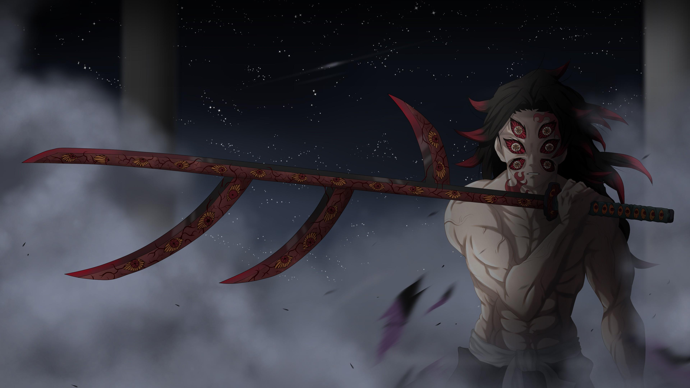

| Nombre | Apellido |
|---|---|
| Sebastian | Palomino Laredo |
| Oscar | Laredo Nolasco |
| Juan | Quispe Palomino |
Los alumnos realizaron una intensiva investigación para buscar solución a la contaminación de desechos provocado por la población, sus resultados condujeron a una disminución de 80% en los desperdicios producidos por los vecionos del distrito de Villa el Salvador. Muchos científicos y ambientalistas opinian que su trabajo puede llevar a la disminución global por medio de las personas. Sin duda un gran avance que nuestra Perú a aportado al resto del mundo, mucho éxito para esos jóvenes.
8/18/2024
Kokushibo - La Primera Luna Superior
